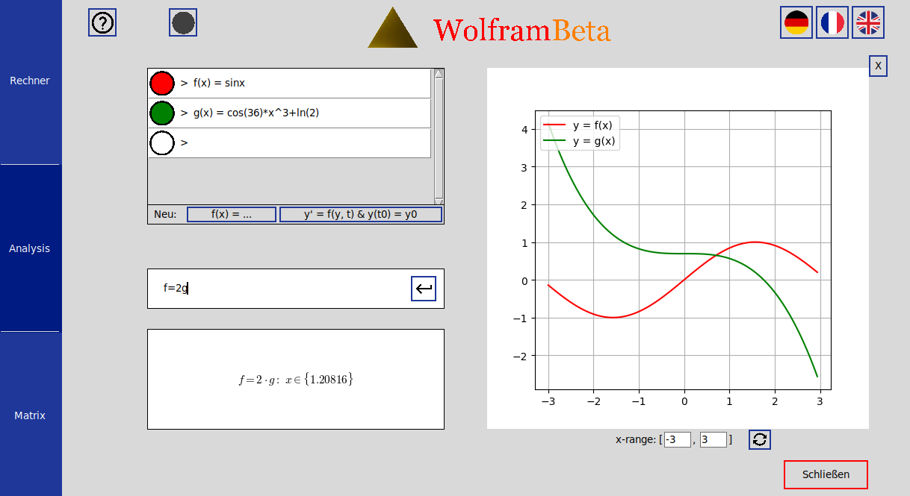

Links in den einzelnen Zeilen kann man entweder Funktionen eingeben oder Differentialgleichungen approximativ
lösen lassen:
Um Funktionen zu speichern, kann man einen Funktionsterm eingeben, woraufhin automatisch ein
zugehöriger Name und eine Farbe für die Funktion generiert wird. Die Funktion wird dann rechts in dem Graphen
angezeigt. Die Funktion kann man später ändern, und deren Sichtbarkeit durch den Kopf links der Funktions ein-/
und ausschalten.
Um Differentialgleichungen zu lösen, gibt man eine Funktion abhängig von y(t) und t, und einen Startwert ein.
Sie soll die Form y' = f(y, t) & y(t_0) = y_0 haben.
| Ausdruck | Funktion | Beispiel |
|---|---|---|
| cos, arccos, cosh, arccosh, sin, arcsin, sinh, arcsinh, tan, arctan, tanh, arctanh |
Elementare trigonometrischen Funktionen | cos(pi) |
| exp(x) oder e^x | Exponentialfunktion | e^4 |
| pow(a, b) oder a^b | Potenzen | pow(3, 7), 3^7, 3**7 |
| sqrt(x) oder root(x, n) | Wurzelfunktion | sqrt(2), root(18, 5) |
| ln(x) | natürlicher Logarithmus | ln(2) |
| log(x, n) | Logarithmus (Basis n) von x | log(10, 2) |
Unter den Eingabezeilen kann man Funktions-spezifische Berechnungen tätigen. Dort kann man unter anderem die Wendepunkte, Nullstellen oder Ableitungen von den gespeicherten Funktionen anzeigen lassen. Es werden auch die normalen arithmetischen Operatationen zwischen den Funktionstermen interpretiert.
| Ausdruck | Funktion | Beispiel |
|---|---|---|
| min(f, a, b), max(f, a, b) | Minimum/Maximum von f auf [a;b] bestimmen | min(sin^2 - cos(5*x), 0.5, 0.7) |
| nullstellen(f, a, b), f=0 | Nullstellen von f auf [a;b] bestimmen | nullstelle(x^3-x*sin(x),0,2) |
| Int(a, b, f(x), x) | Integral von f über [a; b] bezüglich der Variable x. | Int(3,4,ln(x)/x,x) |
| d/dx(f(x)) | Ableitung von f(x). | d/dx(sqrt(1-cos(x)^2)) |
| d^n/dx^n(f(x)) | Exakte n'te Ableitung von f(x). | d^3/dx^3(ln(sin(x)^2 + 1)) |
| d^n/dx^n(f(x))(x_0) | Approximative n'te Ableitung von f(x) in x_0. | d^3/dx^3(sin(exp(x^2 - 4)))(5) |
| Int(a, b, f) | Integral von a nach b von f | Int(0, 5, f) |
Bei Funktionen wie min, max und nullstellen ist die Angabe des Intervalls [a, b] nicht notwendig: Wenn sie a und b beim Aufruf der Funktionen weglassen, wird automatisch das unter dem Graphen angezeigte Intervall (das man übrigens frei ändern kann) als Standartintervall genommen.

Durch das Neville-Schema kann ein Polynom gefunden werden, das durch alle Punkte läuft, die man angibt.
Geben Sie in der Eingabe unten zum Beispiel Folgendes ein:
neville((2, 3), (4, 8), (9, 0))
Es werden die gegebenen Punkte und das gefundene Polynom im Graphen angezeigt.